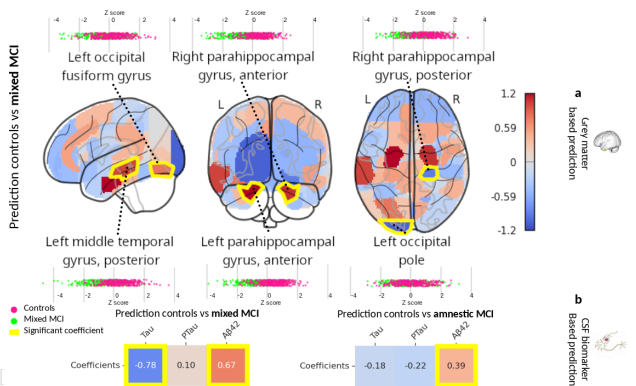
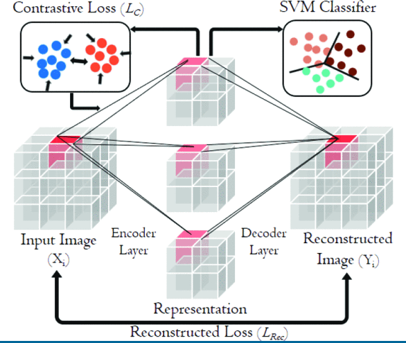

Published peer-reviewed scientific contributions
--2023
Grey matter volume and CSF biomarkers predict neuropsychological subtypes of MCI
Lefort-Besnard J, Naveau M, Delcroix N, Decker L,Cignetti F, for the Alzheimer’s Disease Neuroimaging Initiative
Neurobiology of aging
PDF
Codes
Quick overview
There is increasing evidence of different subtypes of individuals with mild cognitive impairment (MCI). An important line of research is whether neuropsychologically-defined subtypes have distinct patterns of neurodegeneration and CSF biomarker composition. In our study, we provide evidence that multimodal neuropsychological subtyping is both clinically and neurobiologically meaningful.
Fig: Brain significant regions of interest predictive of the mixed MCI subgroup and controls, as well as CSF biomarker levels predictive of the mixed MCI and amnestic MCI subgroups.
--2022
Accurate machine learning prediction of sexual orientation based on brain morphology and intrinsic functional connectivity
Lefort-Besnard J, Clemens B, Ritter C, Smith E, Votinov M, Derntl B, Habel U & Bzdok D
Cerebral Cortex
PDF
Codes
Quick overview
Sexual orientation in humans represents a multilevel construct that is grounded in both neurobiological and environmental factors. Here, we bring to bear a machine learning approach to predict sexual orientation from gray matter volumes (GMVs) or resting-state functional connectivity (RSFC). We found an average accuracy of 62% for predicting sexual orientation based on GMV and an average predictive accuracy of 92% using RSFC. Regions in the precentral gyrus, precuneus and the prefrontal cortex were significantly informative for distinguishing heterosexual from homosexual participants in both the GMV and RSFC settings.
 Fig: Statistical workflow for the rsfMRI analysis (stacking pipeline with classification models).
Fig: Statistical workflow for the rsfMRI analysis (stacking pipeline with classification models).
--2021
Phenotypical predictors of pregnancy-related restless legs syndrome and their association with basal ganglia and the limbic circuits
Chechko N, Lefort-Besnard J, Goecke T, Frensch M, Schnakenberg P, Stickel S, & Bzdok D
Nature Scientific Reports
Open access
Codes
Quick overview
Restless legs syndrome (RLS) in pregnancy is a common disorder with a multifactorial etiology. A multivariate two-window algorithm was employed to systematically chart the relationship between brain structures and phenotypical predictors of RLS. A decreased volume of the parietal, orbitofrontal and frontal areas shortly after delivery was found to be linked to persistent RLS symptoms up to 12 weeks postpartum, the symptoms' severity and intensity in the most recent pregnancy, and a history of RLS in previous pregnancies. The same negative relationship was observed between brain volume and not being married, not receiving any iron supplement and higher numbers of stressful life events.
 Fig: Specific patterns linking the basal ganglia to the phenotypical predictors of RLS.
Fig: Specific patterns linking the basal ganglia to the phenotypical predictors of RLS.
--2020
Behavior score-embedded brain encoder network for improved classification of Alzheimer disease using resting state fMRI
Lefort-Besnard J, Hsieh W, Yang H, Kuo L, & Lee C
IEEE EMBC 42th
PDF
Codes
Quick overview
In this work using two different datasets, we propose a behavior score-embedded encoder network (BSEN) that integrates regularly administrated psychological tests information into the encoding procedure of representing subject's resting-state fMRI data for automatic classification tasks. Based on a 3D convolutional autoencoder structure with contrastive loss jointly optimized using behavior scores from Mini-Mental State Examination (MMSE) and Clinical Dementia Rating (CDR).
Fig: A schematic of the BSEN architecture in classifying HC, MCI and AD. The input of the network is BOLD signal of subjects per time.
Patterns of autism symptoms: hidden structure in the ADOS and ADI-R instruments
Lefort-Besnard J, Vogeley K, Schilbach L, Varoquaux G, Thirion B, Dumas G, & Bzdok D
Nature Translational Psychiatry
Open access
Codes
Quick overview
We simultaneously revisited the Autism Diagnostic Interview-Revised (ADI-R) and Autism Diagnostic Observation Schedule (ADOS) with a comprehensive data-analytics strategy. Here, the combination of pattern-analysis algorithms and extensive data resources (n=266 patients aged 7–49 years) allowed identifying coherent clinical constellations in and across ADI-R and ADOS assessments widespread in clinical practice. The collective results suggest that (i) identifying autism subtypes and severity for a given individual may be most manifested in the ADI-R social and communication domains, (ii) the ADI-R might be a more appropriate tool to accurately capture symptom severity, and (iii) the ADOS domains were more relevant than the ADI-R domains to capture sex differences.
 Fig: Domain scores of the ADI-R and ADOS (social, communication and repetitive behavior) as well as the age, sex and fluid IQ (FIQ) of each patient are showed with their mutual linear relationships.
Fig: Domain scores of the ADI-R and ADOS (social, communication and repetitive behavior) as well as the age, sex and fluid IQ (FIQ) of each patient are showed with their mutual linear relationships.
--2018
Patterns of schizophrenia symptoms: hidden structure in the PANSS questionnaire
Lefort-Besnard J, Varoquaux G, Derntl B, Gruber O, Aleman A, Jardri R, ... & Bzdok D
Nature Translational Psychiatry
Open access in PhD thesis
Quick overview
The combination of machine learning algorithms and an international multi-site dataset (n=218 patients) identified distinctive patterns underlying schizophrenia from the widespread PANSS questionnaire. Our clustering approach revealed a negative symptom patient group as well as a moderate and a severe group, giving further support for the existence of schizophrenia subtypes. Additionally, emerging regression analyses uncovered the most clinically predictive questionnaire items. Small subsets of PANSS items showed convincing forecasting performance in single patients. Our collective results suggest that identifying best treatment for a given individual may be grounded in subtle item combinations that transcend the long-trusted positive, negative, and cognitive categories.
 Fig: Performance and behavior of the parsimony-inducing learning algorithm that was used to search through the array of questionnaire items and extract the most parsimonious subsets of items for predicting schizophrenia severity.
Fig: Performance and behavior of the parsimony-inducing learning algorithm that was used to search through the array of questionnaire items and extract the most parsimonious subsets of items for predicting schizophrenia severity.
Different shades of default mode disturbance in schizophrenia: Subnodal covariance estimation in structure and function
Lefort-Besnard J, Bassett D, Smallwood J, Margulies D, Derntl B, Gruber O, ... & Bzdok D
Human brain mapping
Open access in PhD thesis Link
Quick overview
This study systematically revisited network disruption in patients with schizophrenia using data-derived network atlases and multivariate pattern-learning algorithms in a multisite dataset (n=325). Resting-state fluctuations in unconstrained brain states were used to estimate functional connectivity, and local volume differences between individuals were used to estimate structural co-occurrence within and between the DMN (default mode network), SN (saliency network), and DAN (dorsal attention network). Evidence did not confirm that the backbone of the DMN was the primary driver of brain dysfunction in schizophrenia. Instead, functional and structural aberrations were frequently located outside of the DMN core, such as in the anterior temporoparietal junction and precuneus. Our findings reframe the role of the DMN core and its relation to canonical networks in schizophrenia. We thus underline the importance of large-scale neural interactions as effective biomarkers and indicators of how to tailor psychiatric care to single patients.
 Fig: Dysfonctional connectivity across network.
Fig: Dysfonctional connectivity across network.
--2017
What do parents of children with autism expect from participation in research? A community survey about early autism studies
Fletcher-Watson S, Larsen K, ... Lefort-Besnard J, ... & Salomone E.
Autism
Open access
Quick overview
Here, we report on a large survey of parents who have a child on the autism spectrum (n=1040) which specifically probed attitudes to early autism research. The large majority of parents showed positive attitudes overall, and these were associated with greater access to services, higher service quality ratings and higher rates of intellectual disability among their children. Parents valued the scientific goals of research, but half of parents also reported that an intervention component would be an essential prerequisite for them to participate in research.
Attitudes of the autism community to early autism research
Fletcher-Watson S, Apicella F, Auyeung B, Beranova S, Bonnet-Brilhault F, Canal-Bedia R,... Lefort-Besnard J, ... & Yirmiya N.
Autism
PDF
Quick overview
Investigation into the earliest signs of autism in infants has become a significant sub-field of autism research. This work invokes specific ethical concerns such as use of ‘at-risk’ language, communicating study findings to parents and the future perspective of enrolled infants when they reach adulthood.
----
Peer-reviewed conferences
--2023
Narps Open Pipeline: reproducing and sharing 70 pipelines
Lefort-Besnard J, Clenet B, Germani E, Maumet Camille.
Neuro OpenScience Workshop
Lien HAL
Same data meta-analysis, enter the multiverse…
Lefort-Besnard J, Thomas Nichols, Maumet Camille.
Cogbases 2023 conference
Lien HAL
Data sharing in Europe: reviewing current practices
Lefort-Besnard J, Maumet Camille.
GlioMR Imaging 2.0 conference
Lien HAL
--2022
Grey matter volume and CSF biomarkers predict neuropsychological subtypes of MCI
Lefort-Besnard J, Naveau, M, Delcroix, N, Decker L, Cignetti, F.
OHBM 2022, Glasgow
2020
Accurate machine learning prediction of sexual orientation
Présentation orale à la conférence IRTG2150, Aachen, Allemagne
Hidden structure in the ADOS and ADI-R instruments
Présentation orale à la conférence IRTG2150, Aachen, Allemagne
2019
Improved Classification of Alzheimer Disease Using Resting State fMRI
Présentation d’un poster à la conférence IEEE, États-Unis
2018
Patterns of schizophrenia symptoms
Présentation d’un poster à la conférence OHBM2018, Singapour
2017
Underlying structure of the PANSS
Présentation orale à la conférence IRTG2150, UPENN, États-Unis
----